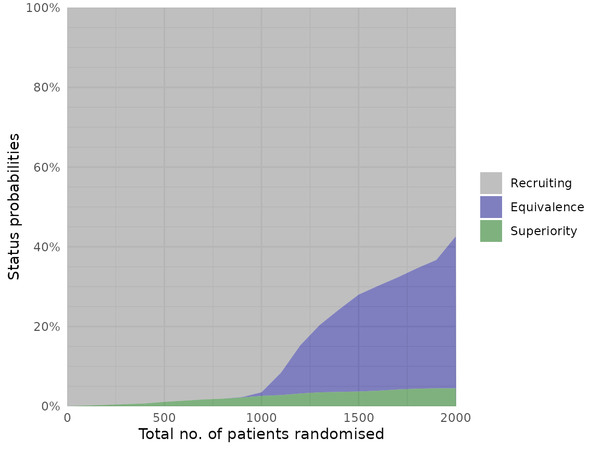

The adaptr package simulates adaptive (multi-arm,
multi-stage) clinical trials using adaptive stopping, adaptive arm
dropping and/or response-adaptive randomisation.
The package has been developed as part of the INCEPT (Intensive Care Platform Trial) project, primarily supported by a grant from Sygeforsikringen “danmark”.
Additional guidance on the key methodological considerations when planning and comparing adaptive clinical trials can be found in the open access article “An overview of methodological considerations regarding adaptive stopping, arm dropping and randomisation in clinical trials” available in Journal of Clinical Epidemiology.
Usage and workflow overview
The central functionality of adaptr and the typical
workflow is illustrated here.
Setup
First, the package is loaded and a cluster of parallel workers is
initiated by the setup_cluster() function to facilitate
parallel computing:
library(adaptr)
#> Loading 'adaptr' package v1.4.0.
#> For instructions, type 'help("adaptr")'
#> or see https://inceptdk.github.io/adaptr/.
setup_cluster(2)Parallelisation is supported in many adaptr functions,
and a cluster of parallel workers can be setup for the entire session
using setup_cluster() early in the script as in this
example. Alternatively, parallelisation can be controlled by the global
"mc.cores" option (set by calling
options(mc.cores = <number>)) or the
cores argument of many functions.
Specify trial design
Setup a trial specification (defining the trial design and scenario)
using the general setup_trial() function, or one of the
special case variants using default priors
setup_trial_binom() (for binary, binomially distributed
outcomes; used in this example) or setup_trial_norm() (for
continuous, normally distributed outcomes).
The example trial specification has the following characteristics:
- A binary, binomially distributed, undesirable (default) outcome
- Three arms with no designated common control
- Identical underlying outcome probabilities of 25% in each arm
- Analyses conducted when specific number of patients have outcome data available, with more patients randomised at all but the last look (lag due to follow-up and data collection/verification)
- No explicitly defined stopping thresholds for
inferiorityorsuperiority(default thresholds of < 1% and > 99%, respectively, apply) - Equivalence stopping rule defined as > 90% probability
(
equivalence_prob) of between-arm differences of all remaining arms being < 5 %-points - Response-adaptive randomisation with minimum allocation
probabilities of 20% and softening of allocation ratios by a constant
factor (
soften_power)
See ?setup_trial() for details on all the arguments or
vignette("Basic-examples", "adaptr") for
basic example trial specifications and a thorough
review of the general trial specification settings, and
vignette("Advanced-example", "adaptr") for an
advanced example including details on how to specify
user-written functions for generating outcomes and posterior draws.
Below, the trial specification is setup and a human-readable overview printed:
binom_trial <- setup_trial_binom(
arms = c("Arm A", "Arm B", "Arm C"),
true_ys = c(0.25, 0.25, 0.25),
min_probs = rep(0.20, 3),
data_looks = seq(from = 300, to = 2000, by = 100),
randomised_at_looks = c(seq(from = 400, to = 2000, by = 100), 2000),
equivalence_prob = 0.9,
equivalence_diff = 0.05,
soften_power = 0.5
)
print(binom_trial, prob_digits = 3)
#> Trial specification: generic binomially distributed outcome trial
#> * Undesirable outcome
#> * No common control arm
#> * Best arms: Arm A and Arm B and Arm C
#>
#> Arms, true outcomes, starting allocation probabilities
#> and allocation probability limits:
#> arms true_ys start_probs fixed_probs min_probs max_probs
#> Arm A 0.25 0.333 NA 0.2 NA
#> Arm B 0.25 0.333 NA 0.2 NA
#> Arm C 0.25 0.333 NA 0.2 NA
#>
#> Maximum sample size: 2000
#> Maximum number of data looks: 18
#> Planned data looks after: 300, 400, 500, 600, 700, 800, 900, 1000, 1100, 1200, 1300, 1400, 1500, 1600, 1700, 1800, 1900, 2000 patients have reached follow-up
#> Number of patients randomised at each look: 400, 500, 600, 700, 800, 900, 1000, 1100, 1200, 1300, 1400, 1500, 1600, 1700, 1800, 1900, 2000, 2000
#>
#> Superiority threshold: 0.99 (all analyses)
#> Inferiority threshold: 0.01 (all analyses)
#> Equivalence threshold: 0.9 (all analyses) (no common control)
#> Absolute equivalence difference: 0.05
#> No futility threshold (not relevant - no common control)
#> Soften power for all analyses: 0.5By default, (most) probabilities are shown with 3 decimals. This can
be changed by explicitly print()ing the specification with
the prob_digits arguments, for example:
print(binom_trial, prob_digits = 2)
#> Trial specification: generic binomially distributed outcome trial
#> * Undesirable outcome
#> * No common control arm
#> * Best arms: Arm A and Arm B and Arm C
#>
#> Arms, true outcomes, starting allocation probabilities
#> and allocation probability limits:
#> arms true_ys start_probs fixed_probs min_probs max_probs
#> Arm A 0.25 0.33 NA 0.2 NA
#> Arm B 0.25 0.33 NA 0.2 NA
#> Arm C 0.25 0.33 NA 0.2 NA
#>
#> Maximum sample size: 2000
#> Maximum number of data looks: 18
#> Planned data looks after: 300, 400, 500, 600, 700, 800, 900, 1000, 1100, 1200, 1300, 1400, 1500, 1600, 1700, 1800, 1900, 2000 patients have reached follow-up
#> Number of patients randomised at each look: 400, 500, 600, 700, 800, 900, 1000, 1100, 1200, 1300, 1400, 1500, 1600, 1700, 1800, 1900, 2000, 2000
#>
#> Superiority threshold: 0.99 (all analyses)
#> Inferiority threshold: 0.01 (all analyses)
#> Equivalence threshold: 0.9 (all analyses) (no common control)
#> Absolute equivalence difference: 0.05
#> No futility threshold (not relevant - no common control)
#> Soften power for all analyses: 0.5Calibration
In the example trial specification, there are no true between-arm
differences, and stopping rules for inferiority and superiority are not
explicitly defined. This is intentional, as these stopping rules will be
calibrated to obtain a desired probability of stopping for superiority
in the scenario with no between-arm differences (corresponding to the
Bayesian type 1 error rate). Trial specifications do not necessarily
have to be calibrated. Instead,simulations can be run directly using the
run_trials() function covered below (or
run_trial() for a single simulation). This can be followed
by assessment of performance metrics, and manually changing the
specification (including the stopping rules) until performance metrics
are considered acceptable. In this example, a full calibration procedure
is performed.
Calibration of a trial specification is done using the
calibrate_trial() function, which defaults to calibrate
constant, symmetrical stopping rules for inferiority and superiority
(expecting a trial specification with identical outcomes in each arm),
but can be used to calibrate any parameter in a trial specification
towards any performance metric if a user-defined calibration function
(fun) is specified.
To perform the calibration, a target value, a
search_range, a tolerance value (tol), and the
allowed direction of the tolerance value (dir) must be
specified (or alternatively, the defaults can be used). Of note, the
number of simulations in each calibration step here is lower than
generally recommended (to reduce the time required to build this
vignette):
# Calibrate the trial specification
calibrated_binom_trial <- calibrate_trial(
trial_spec = binom_trial,
n_rep = 1000, # 1000 simulations for each step (more generally recommended)
base_seed = 4131, # Base random seed (for reproducible results)
target = 0.05, # Target value for calibrated metric (default value)
search_range = c(0.9, 1), # Search range for superiority stopping threshold
tol = 0.01, # Tolerance range
dir = -1 # Tolerance range only applies below target
)
# Print result (to check if calibration is successful)
calibrated_binom_trial
#> Trial calibration:
#> * Result: calibration successful
#> * Best x: 0.9830921
#> * Best y: 0.045
#>
#> Central settings:
#> * Target: 0.05
#> * Tolerance: 0.01 (at or below target, range: 0.04 to 0.05)
#> * Search range: 0.9 to 1
#> * Gaussian process controls:
#> * - resolution: 5000
#> * - kappa: 0.5
#> * - pow: 1.95
#> * - lengthscale: 1 (constant)
#> * - x scaled: yes
#> * Noisy: no
#> * Narrowing: yes
#>
#> Calibration/simulation details:
#> * Total evaluations: 4 (previous + grid + iterations)
#> * Repetitions: 1000
#> * Calibration time: 54.3 secs
#> * Base random seed: 4131
#>
#> See 'help("calibrate_trial")' for details.The calibration is successful (if not, results should not be used,
and the calibration settings should be changed and the calibration
repeated). The calibrated, constant stopping threshold for superiority
is printed with the results (0.9830921) and can be extracted using
calibrated_binom_trial$best_x. Using the default
calibration functionality, the calibrated, constant stopping threshold
for inferiority is symmetrical, i.e.,
1 - stopping threshold for superiority (0.0169079). The
calibrated trial specification may be extracted using
calibrated_binom_trial$best_trial_spec and, if printed,
will also include the calibrated stopping thresholds.
Calibration results may be saved and reloaded by using the
path argument, to avoid unnecessary repeated
simulations.
Summarising results
The results of the simulations using the calibrated trial
specification conducted during the calibration procedure may be
extracted using calibrated_binom_trial$best_sims. These
results can be summarised with several functions. Most of these
functions support different ‘selection strategies’ for simulations not
ending with superiority, i.e., performance metrics can be calculated
assuming different arms would be used in clinical practice if no arm is
ultimately superior.
The check_performance() function summarises performance
metrics in a tidy data.frame, with uncertainty measures
(bootstrapped confidence intervals) if requested. Here, performance
metrics are calculated considering the ‘best’ arm (i.e., the one with
the highest probability of being overall best) selected in simulations
not ending with superiority:
# Calculate performance metrics with uncertainty measures
binom_trial_performance <- check_performance(
calibrated_binom_trial$best_sims,
select_strategy = "best",
uncertainty = TRUE, # Calculate uncertainty measures
n_boot = 1000, # 1000 bootstrap samples (more typically recommended)
ci_width = 0.95, # 95% confidence intervals (default)
boot_seed = "base" # Use same random seed for bootstrapping as for simulations
)
# Print results
print(binom_trial_performance, digits = 2)
#> metric est err_sd err_mad lo_ci hi_ci
#> 1 n_summarised 1000.00 0.00 0.00 1000.00 1000.00
#> 2 size_mean 1757.20 11.26 11.12 1736.20 1779.10
#> 3 size_sd 370.74 9.31 9.34 353.87 389.70
#> 4 size_median 2000.00 0.00 0.00 2000.00 2000.00
#> 5 size_p25 1500.00 47.25 0.00 1400.00 1500.00
#> 6 size_p75 2000.00 0.00 0.00 2000.00 2000.00
#> 7 size_p0 400.00 NA NA NA NA
#> 8 size_p100 2000.00 NA NA NA NA
#> 9 sum_ys_mean 440.16 2.90 2.91 434.50 445.89
#> 10 sum_ys_sd 95.56 2.34 2.41 91.15 100.14
#> 11 sum_ys_median 487.00 1.36 0.74 484.00 489.00
#> 12 sum_ys_p25 366.00 9.63 8.90 353.00 387.00
#> 13 sum_ys_p75 506.00 1.09 1.48 504.00 508.00
#> 14 sum_ys_p0 88.00 NA NA NA NA
#> 15 sum_ys_p100 572.00 NA NA NA NA
#> 16 ratio_ys_mean 0.25 0.00 0.00 0.25 0.25
#> 17 ratio_ys_sd 0.01 0.00 0.00 0.01 0.01
#> 18 ratio_ys_median 0.25 0.00 0.00 0.25 0.25
#> 19 ratio_ys_p25 0.24 0.00 0.00 0.24 0.24
#> 20 ratio_ys_p75 0.26 0.00 0.00 0.26 0.26
#> 21 ratio_ys_p0 0.19 NA NA NA NA
#> 22 ratio_ys_p100 0.30 NA NA NA NA
#> 23 prob_conclusive 0.42 0.02 0.01 0.39 0.45
#> 24 prob_superior 0.04 0.01 0.01 0.03 0.06
#> 25 prob_equivalence 0.38 0.02 0.01 0.35 0.41
#> 26 prob_futility 0.00 0.00 0.00 0.00 0.00
#> 27 prob_max 0.58 0.02 0.01 0.55 0.61
#> 28 prob_select_arm_Arm A 0.35 0.01 0.01 0.32 0.38
#> 29 prob_select_arm_Arm B 0.33 0.01 0.01 0.30 0.36
#> 30 prob_select_arm_Arm C 0.32 0.01 0.01 0.29 0.35
#> 31 prob_select_none 0.00 0.00 0.00 0.00 0.00
#> 32 rmse 0.02 0.00 0.00 0.02 0.02
#> 33 rmse_te NA NA NA NA NA
#> 34 mae 0.01 0.00 0.00 0.01 0.01
#> 35 mae_te NA NA NA NA NA
#> 36 idp NA NA NA NA NASimilar results in list format (without uncertainty
measures) can be obtained using the summary() method (as
known from, e.g., regression models inR), which comes with
a print() method providing formatted results. If the
simulation results are printed directly, this function is called with
the default arguments (all arguments, e.g., selection strategies may
also be directly supplied to the print() method).
binom_trial_summary <- summary(
calibrated_binom_trial$best_sims,
select_strategy = "best"
)
print(binom_trial_summary, digits = 2)
#> Multiple simulation results: generic binomially distributed outcome trial
#> * Undesirable outcome
#> * Number of simulations: 1000
#> * Number of simulations summarised: 1000 (all trials)
#> * No common control arm
#> * Selection strategy: best remaining available
#> * Treatment effect compared to: no comparison
#>
#> Performance metrics (using posterior estimates from final analysis [all patients]):
#> * Sample sizes: mean 1757.20 (SD: 370.74) | median 2000.00 (IQR: 1500.00 to 2000.00) [range: 400.00 to 2000.00]
#> * Total summarised outcomes: mean 440.16 (SD: 95.56) | median 487.00 (IQR: 366.00 to 506.00) [range: 88.00 to 572.00]
#> * Total summarised outcome rates: mean 0.2503 (SD: 0.0109) | median 0.2500 (IQR: 0.2435 to 0.2573) [range: 0.1900 to 0.2950]
#> * Conclusive: 42.50%
#> * Superiority: 4.50%
#> * Equivalence: 38.00%
#> * Futility: 0.00% [not assessed]
#> * Inconclusive at max sample size: 57.50%
#> * Selection probabilities: Arm A: 35.10% | Arm B: 32.90% | Arm C: 32.00% | None: 0.00%
#> * RMSE / MAE: 0.01767 / 0.01164
#> * RMSE / MAE treatment effect: not estimated / not estimated
#> * Ideal design percentage: not estimable
#>
#> Simulation details:
#> * Simulation time: 20.2 secs
#> * Base random seed: 4131
#> * Credible interval width: 95%
#> * Number of posterior draws: 5000
#> * Estimation method: posterior medians with MAD-SDsIndividual simulation results can be extracted in a tidy
data.frame using extract_results():
binom_trial_results <- extract_results(
calibrated_binom_trial$best_sims,
select_strategy = "best"
)
nrow(binom_trial_results) # Number of rows/simulations
#> [1] 1000
head(binom_trial_results) # Print the first rows
#> sim final_n sum_ys ratio_ys final_status superior_arm selected_arm
#> 1 1 2000 478 0.2390 equivalence <NA> Arm A
#> 2 2 2000 488 0.2440 max <NA> Arm A
#> 3 3 2000 521 0.2605 max <NA> Arm C
#> 4 4 2000 500 0.2500 max <NA> Arm C
#> 5 5 2000 471 0.2355 max <NA> Arm A
#> 6 6 2000 503 0.2515 max <NA> Arm B
#> err sq_err err_te sq_err_te
#> 1 -0.0134029565 1.796392e-04 NA NA
#> 2 -0.0118977741 1.415570e-04 NA NA
#> 3 0.0004940695 2.441046e-07 NA NA
#> 4 -0.0127647255 1.629382e-04 NA NA
#> 5 -0.0232813002 5.420189e-04 NA NA
#> 6 -0.0154278469 2.380185e-04 NA NAFinally, the probabilities of different remaining arms and their
statuses (with uncertainty) at the last adaptive analysis can be
summarised using the check_remaining_arms() function
(dropped arms will be shown with an empty text string):
check_remaining_arms(
calibrated_binom_trial$best_sims,
ci_width = 0.95 # 95% confidence intervals (default)
)
#> arm_Arm A arm_Arm B arm_Arm C n prop se lo_ci
#> 1 active active active 528 0.528 0.02172556 0.48541868
#> 2 equivalence equivalence 121 0.121 0.02964793 0.06289112
#> 3 equivalence equivalence 120 0.120 0.02966479 0.06185807
#> 4 equivalence equivalence 108 0.108 0.02986637 0.04946299
#> 5 equivalence equivalence equivalence 31 0.031 0.03112876 0.00000000
#> 6 superior 22 0.022 0.03127299 0.00000000
#> 7 superior 14 0.014 0.03140064 0.00000000
#> 8 superior 9 0.009 0.03148015 0.00000000
#> hi_ci
#> 1 0.57058132
#> 2 0.17910888
#> 3 0.17814193
#> 4 0.16653701
#> 5 0.09201126
#> 6 0.08329394
#> 7 0.07554412
#> 8 0.07069997Visualising results
Several visualisation functions are included (all are optional, and
all require the ggplot2 package installed).
Convergence and stability of one or more performance metrics may be
visually assessed using plot_convergence() function:
plot_convergence(
calibrated_binom_trial$best_sims,
metrics = c("size mean", "prob_superior", "prob_equivalence"),
# select_strategy can be specified, but does not affect the chosen metrics
)Plotting other metrics is possible; see the
plot_convergence() documentation. The simulation results
may also be split into separate, consecutive batches when assessing
convergence, to further assess the stability:
plot_convergence(
calibrated_binom_trial$best_sims,
metrics = c("size mean", "prob_superior", "prob_equivalence"),
n_split = 4
)The status probabilities for the overall trial according to trial
progress can be visualised using the plot_status()
function:
plot_status(
calibrated_binom_trial$best_sims,
x_value = "total n" # Total number of randomised patients at X-axis
)
Similarly, the status probabilities for one or more specific trial arms can be visualised:
plot_status(
calibrated_binom_trial$best_sims,
x_value = "total n",
arm = NA # NA for all arms or character vector for specific arms
)Finally, various metrics may be summarised over the progress of one
or multiple trial simulations using the plot_history()
function, which requires non-sparse results (the sparse
argument must be FALSE in calibrate_trials(),
run_trials(), or run_trial(), leading to
additional results being saved - all other functions work with sparse
results). This will be illustrated below.
Use calibrated stopping thresholds in another scenario
The calibrated stopping thresholds (calibrated in a scenario with no between-arm differences) may be used to run simulations with the same overall trial specification, but according to a different scenario (i.e., with between-arm differences present) to assess performance metrics (including the Bayesian analogue of power).
First, a new trial specification is setup using the same settings as before, except for between-arm differences and the calibrated stopping thresholds:
binom_trial_calib_diff <- setup_trial_binom(
arms = c("Arm A", "Arm B", "Arm C"),
true_ys = c(0.25, 0.20, 0.30), # Different outcomes in the arms
min_probs = rep(0.20, 3),
data_looks = seq(from = 300, to = 2000, by = 100),
randomised_at_looks = c(seq(from = 400, to = 2000, by = 100), 2000),
# Stopping rules for inferiority/superiority explicitly defined
# using the calibration results
inferiority = 1 - calibrated_binom_trial$best_x,
superiority = calibrated_binom_trial$best_x,
equivalence_prob = 0.9,
equivalence_diff = 0.05,
soften_power = 0.5
)Simulations using the trial specification with calibrated stopping
thresholds and differences present can then be conducted using the
run_trials() function. Here, we specify that non-sparse
results will be returned (to illustrate the plot_history()
function).
binom_trial_diff_sims <- run_trials(
binom_trial_calib_diff,
n_rep = 1000, # 1000 simulations (more generally recommended)
base_seed = 1234, # Reproducible results
sparse = FALSE # Return additional results for visualisation
)Again, simulations may be saved and reloaded using the
path argument.
We then calculate performance metrics as above:
check_performance(
binom_trial_diff_sims,
select_strategy = "best",
uncertainty = TRUE,
n_boot = 1000, # 1000 bootstrap samples (more typically recommended)
ci_width = 0.95,
boot_seed = "base"
)
#> metric est err_sd err_mad lo_ci hi_ci
#> 1 n_summarised 1000.000 0.000 0.000 1000.000 1000.000
#> 2 size_mean 1245.100 16.618 17.272 1215.185 1277.702
#> 3 size_sd 510.702 7.414 7.436 496.194 525.386
#> 4 size_median 1200.000 46.824 0.000 1200.000 1300.000
#> 5 size_p25 800.000 35.902 0.000 800.000 900.000
#> 6 size_p75 1700.000 46.345 0.000 1600.000 1700.000
#> 7 size_p0 400.000 NA NA NA NA
#> 8 size_p100 2000.000 NA NA NA NA
#> 9 sum_ys_mean 287.066 3.697 3.827 280.241 294.549
#> 10 sum_ys_sd 113.660 1.697 1.650 110.337 116.954
#> 11 sum_ys_median 286.000 5.981 7.413 274.500 295.000
#> 12 sum_ys_p25 194.750 7.147 7.413 180.731 207.756
#> 13 sum_ys_p75 382.250 6.961 7.042 370.000 395.250
#> 14 sum_ys_p0 85.000 NA NA NA NA
#> 15 sum_ys_p100 518.000 NA NA NA NA
#> 16 ratio_ys_mean 0.233 0.000 0.001 0.232 0.234
#> 17 ratio_ys_sd 0.016 0.000 0.000 0.015 0.016
#> 18 ratio_ys_median 0.232 0.001 0.001 0.231 0.233
#> 19 ratio_ys_p25 0.222 0.001 0.001 0.220 0.224
#> 20 ratio_ys_p75 0.243 0.001 0.001 0.241 0.244
#> 21 ratio_ys_p0 0.196 NA NA NA NA
#> 22 ratio_ys_p100 0.298 NA NA NA NA
#> 23 prob_conclusive 0.882 0.011 0.010 0.862 0.902
#> 24 prob_superior 0.719 0.015 0.015 0.690 0.747
#> 25 prob_equivalence 0.163 0.012 0.012 0.139 0.185
#> 26 prob_futility 0.000 0.000 0.000 0.000 0.000
#> 27 prob_max 0.118 0.011 0.010 0.098 0.138
#> 28 prob_select_arm_Arm A 0.033 0.005 0.004 0.023 0.043
#> 29 prob_select_arm_Arm B 0.967 0.005 0.004 0.957 0.977
#> 30 prob_select_arm_Arm C 0.000 0.000 0.000 0.000 0.000
#> 31 prob_select_none 0.000 0.000 0.000 0.000 0.000
#> 32 rmse 0.020 0.001 0.001 0.019 0.022
#> 33 rmse_te NA NA NA NA NA
#> 34 mae 0.011 0.000 0.000 0.010 0.012
#> 35 mae_te NA NA NA NA NA
#> 36 idp 98.350 0.264 0.222 97.849 98.850Similarly, overall trial statuses for the scenario with differences are visualised:
plot_status(binom_trial_diff_sims, x_value = "total n")
Statuses for each arm in this scenario are also visualised:
plot_status(binom_trial_diff_sims, x_value = "total n", arm = NA)
We can plot the median and interquartile ranges of allocation
probabilities in each arm over time using the
plot_history() function (requiring non-sparse results,
leading to substantially larger objects and files if saved):
plot_history(
binom_trial_diff_sims,
x_value = "total n",
y_value = "prob"
)
Similarly, the median (interquartile range) number of patients allocated to each arm as the trial progresses can be visualised:
plot_history(
binom_trial_diff_sims,
x_value = "total n",
y_value = "n all"
)Plotting other metrics is possible; see the
plot_history() documentation.
Citation
If you use the package, please consider citing it:
citation(package = "adaptr")
#> To cite package 'adaptr' in publications use:
#>
#> Granholm A, Jensen AKG, Lange T, Kaas-Hansen BS (2022). adaptr: an R
#> package for simulating and comparing adaptive clinical trials.
#> Journal of Open Source Software, 7(72), 4284. URL
#> https://doi.org/10.21105/joss.04284.
#>
#> A BibTeX entry for LaTeX users is
#>
#> @Article{,
#> title = {{adaptr}: an R package for simulating and comparing adaptive clinical trials},
#> author = {Anders Granholm and Aksel Karl Georg Jensen and Theis Lange and Benjamin Skov Kaas-Hansen},
#> journal = {Journal of Open Source Software},
#> year = {2022},
#> volume = {7},
#> number = {72},
#> pages = {4284},
#> url = {https://doi.org/10.21105/joss.04284},
#> doi = {10.21105/joss.04284},
#> }